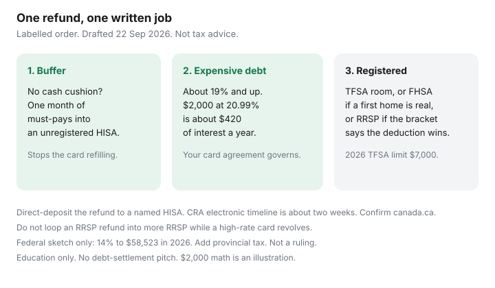

Personal Finance · Canada
What to Do With a Canadian Tax Refund: HISA Parking vs Debt vs Registered Contributions
A tax refund feels like a bonus. It is usually tax you already paid, sitting at the CRA until the return is assessed, or the tax you deferred by contributing to an RRSP. Either way it arrives as a deposit with no envelope on it, and chequing spends unlabelled money. The job is to give the deposit a written destination before it posts.
This is a household triage: high-interest debt, a short HISA parking spell when the emergency gap is real, then registered room if the first two are handled. It is not a product pitch and not tax advice. CRA and FCAC pages used 22 Sep 2026. Your notice of assessment is the document that matters.
Disclosure: HISA accounts and tax-filing software are offer types. Saving Optimizer may later add partner links. We do not currently claim bank, fintech, or software partnerships. This is education, not tax, credit, or investment advice. No debt-settlement, payday, or credit-repair offer.
Key takeaways
- A refund is not new income. Direct-deposit it to a labelled HISA, not everyday chequing, so it cannot leak while you decide.
- If a revolving balance is around 19% or higher, that balance comes before another registered contribution. A public card benchmark on this site is 20.99%. Your agreement governs.
- If the emergency fund is below one month of must-pays, peel that month off into a HISA first so the card does not refill next Friday. Then send the rest to the expensive debt.
- TFSA room in 2026 includes a $7,000 dollar limit. FHSA participation room is $8,000 in the year you open, lifetime $40,000. RRSP dollar ceiling for 2026 is $33,810. None of those numbers is permission to skip a 21% card.
- Pre-commit an RRSP-driven refund. Looping it into more RRSP while a card revolves is financing the contribution at the card rate.
Triage order: high-interest debt, emergency gap, then registered room
Write the refund as a single number you have not spent. Then walk this order. Stop at the first step that is not finished.
- Minimums are current on every card, line, and loan. A refund that misses a minimum is a fee story, not a savings story.
- One month of must-pays if you have no buffer at all. Rent or mortgage, utilities, insurance, childcare, those minimums. Park that slice in an unregistered HISA. The debt-or-TFSA ladder uses the same one-month line so payoff does not bounce back as new card debt.
- Revolving debt around 19% and up, including a 20.99% purchase rate used as a benchmark on this site. The interest is contracted. A TFSA is not.
- Registered room that matches a goal you already have: TFSA for flexible savings, FHSA if you are eligible and the home is the plan, RRSP if the bracket says the deduction is worth the lock-in. That fork is RRSP versus TFSA first.
Employer match is not step 4. If a match is uncaptured, fund the match from payroll before you debate the refund. The match guide is employer RRSP match. A refund is a poor substitute for a payroll election you can still turn on.
| Destination | What is certain on $2,000 | When it is the job |
|---|---|---|
| Card at 20.99% | About $420 of interest avoided over a year if the balance would have stayed | Buffer already covers one month, and the card revolves |
| HISA at 2.75%, taxable | About $55 of interest before tax | You need the cash inside the year, or the buffer is short |
| TFSA cash at 1.50% | About $30, tax-free, and it uses room | Buffer is full, no high-rate debt, and you will not need a same-year withdrawal |
| RRSP contribution | A deduction at your marginal rate, then a taxable withdrawal later | High bracket, money stays until retirement, no expensive debt |
The $420 figure is 20.99% of $2,000, simple, if that slice of the card would have remained for a year. It is not a promise about your statement. It is why “invest the refund” loses to a revolving card on this page: we do not assume a market return to beat a contracted rate.

When temporary HISA parking beats rushing a bad investment
Park the whole refund in a named, unregistered HISA for a few days even when you already know the order. CRA’s public timelines for a refund are on the order of two weeks for an electronic return with direct deposit on file, and longer for paper. Confirm the current line on canada.ca. Do not spend a pending number.
Direct deposit belongs on the HISA or on chequing you will sweep the same day. Set it in CRA My Account before you file, which is part of setting up CRA My Account. If the deposit hits a spending account, move it the day it posts. “Temporary” means until the written order is executed, not until the kitchen renovation gets interesting.
Rushing the refund into an investment you cannot explain, or into a TFSA trade because a video said so, is how a tax task becomes a loss you then withdraw. This page does not pick funds. If the money might be needed this year, the HISA is the destination, not a waiting room for a ticker. Interest in that HISA is taxable. A T5 arrives at $50 or more. Report smaller amounts too. The same-week rate checklist is when a promo drops.
RRSP refund loop vs paying down revolving credit
An RRSP contribution can manufacture a refund. The refund-loop guide is about timing: first 60 days, a monthly PAD, and pre-committing the refund so March panic does not spend it. The loop breaks if the refund goes back into another RRSP contribution while a card at ~21% revolves. You deducted income to create cash, then refused to use the cash on the expensive debt.
Rule for this page: if step 3 in the triage is unfinished, the refund pays the card. The loop restarts when the card is gone. If there is no high-rate debt and the buffer is full, pre-commit the refund to the TFSA (if room remains) or to the next RRSP PAD, in that order unless the bracket tree says the deduction is the point. Write the destination on the return worksheet the night you file, not the morning the deposit arrives.
2026 RRSP dollar limit is $33,810. Your deduction limit is the lesser of 18% of prior-year earned income and that ceiling, minus a pension adjustment, plus unused room, as shown on the notice of assessment. A refund does not create extra RRSP room.
TFSA/FHSA contributions when room and goals align
TFSA: the 2026 dollar limit is $7,000, plus unused room, minus contributions already made this year. Withdrawals from 2025 came back on 1 January 2026. A withdrawal you made in 2026 does not. Check the ledger before you drop a refund into a TFSA that also has a payday PAD. Both count. The click-path and the lag are in reading TFSA room.
FHSA: only if you are eligible and a first home is the actual plan. Participation room is $8,000 in the year you open and does not pile up for years you waited. Lifetime contributions are capped at $40,000. A qualifying withdrawal can be tax-free; a casual opening starts a clock of up to 15 years. Automation and carry-forward are in FHSA automation. Qualifying-home rules live on the Housing FHSA how-to. Do not open an FHSA to “do something” with a refund if you already own and fail the first-time test.
Avoid lifestyle creep while the refund is in transit
The leak is the week between “CRA says processing” and the transfer. Three practical locks:
- Tell the other adult the written order in one sentence. “The refund pays the card, except $50 for dinner Friday.” A planned small treat that is a line item beats an unplanned weekend that spends the rest.
- Do not raise a PAD, a subscription, or a kids’ activity because “the refund covers it.” Activities belong in the monthly budget, which is zero-based budgeting. A refund is a one-time deposit.
- If you are self-employed or you had tax owing last year, keep a slice for next April’s instalments or the balance due before you celebrate a refund that was a timing accident. Owing in April and spending a refund in May is the same cash moving in a circle.
A one-page decision tree for middle-aged households
Print this. Circle one leaf.
- No one-month buffer → HISA until that month exists. Remainder follows the next lines.
- Card or retail balance at ~19% or more → that balance, after minimums.
- Employer match not captured → turn on the payroll election. Do not wait for a refund to do it.
- Eligible for an FHSA and you will buy a first home → FHSA up to this year’s participation room, if the buffer and the card are handled.
- Lower federal bracket (2026: 14% on taxable income up to $58,523) and you may need the money → TFSA, within room.
- Higher bracket and the money can stay until retirement → RRSP within your deduction limit, and pre-commit the next refund so it does not land in chequing unnamed.
- None of the above feels true yet → leave it in the named HISA and reread this in seven days. A week of taxable interest is cheaper than a wrong TFSA over-contribution.
Federal brackets are the 2026 thresholds on CRA’s payroll formulas (2.0% indexation) and the current-year rates page: 14% to $58,523, 20.5% to $117,045, 26% to $181,440, 29% to $258,482, 33% above that. Provincial tax sits on top. The tree is a sketch. It is not a ruling on your return.
Sources & date stamps
- CRA — refund timing guidance on canada.ca; direct deposit in My Account; TFSA dollar limit $7,000 for 2026; RRSP dollar limit $33,810 for 2026 (pages consistent with our registered guides, re-checked for this draft 22 Sep 2026).
- CRA, Current-year tax rates and T4127 payroll thresholds for 1 January 2026 — federal brackets above; lowest rate 14% for 2026; indexation factor 2.0%.
- CRA, FHSA — $8,000 participation room in the year you open; $40,000 lifetime.
- FCAC — debt and budgeting pages: high-interest balances and a written plan, not a settlement pitch.
- EQ Bank rates effective 16 Sep 2026 — unregistered 2.75% with qualifying direct deposit; TFSA cash 1.50%. Re-check. The $2,000 table is an illustration.
Frequently asked questions
Is a tax refund extra income?
No. It is tax you already paid, or the result of a deduction such as an RRSP contribution. Treat it as cash that needs a job, not as a raise. Spending it by default is how the refund disappears before the card does.
Should I put the refund on my credit card or in a HISA?
If you have no emergency buffer, set aside one month of must-pay bills in a HISA first. Then put the rest on revolving debt around 19% or higher. A labelled $2,000 at 20.99% costs about $420 of interest over a year. The same $2,000 at 2.75% earns about $55 before tax.
Should the RRSP refund go back into the RRSP?
Only when high-rate debt is gone and the buffer is in place, and the bracket tree says you want another deduction. Looping a refund into more RRSP while a card revolves finances the contribution at the card rate. Pre-commit the destination the night you file.
Can I drop the refund into my TFSA automatically?
Only inside remaining room. The 2026 dollar limit is $7,000 plus unused room, minus contributions already made, including any payday PAD. A same-year withdrawal does not free room until 1 January. Check your ledger, not only CRA My Account.
Where should the deposit land?
A named HISA or a chequing account you will sweep the day it posts. CRA’s public electronic-refund timeline is about two weeks when direct deposit is set up, and longer for paper. Confirm the current page on canada.ca and do not spend a pending amount.